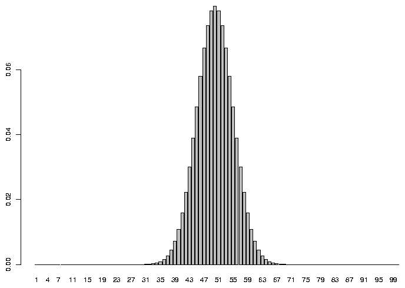

Hypothesis Testing
1 Hypothesis Testing
Much of classical statistics is concerned with the idea of hypothesis testing. This
is a formal framework that we can use to pose questions about a variety of topics in
a consistent form that lets us apply statistical techniques to make statements about
how results that we've gathered relate to questions that we're interested in. If we
carefully follow the rules of hypothesis testing, then we can confidently talk about
the probability of events that we've observed under a variety of hypotheses, and put
our faith in those hypotheses that seem the most reasonable. Central to the idea of
hypothesis testing is the notion of null and alternative hypotheses. We want to present
our question in the form of a statement that assumes that nothing has happened (the null
hypothesis) versus a statement that describes a specific relation or condition
that might better explain our data.
For example, suppose we've got a coin, and we want to find out if it's true, that is, if,
when we flip the coin, are we as likely to see heads as we are to see tails. A null
hypothesis for this situation could be
H0: We're just as likely to get heads as tails when we flip the coin.
A suitable alternative hypothesis might be:
Ha: We're more likely to see either heads or tails when we flip the coin.
An alternative hypothesis such as this is called two-sided, since we'll reject the null
hypothesis if heads are more likely or if tails are more likely. We could use a one-sided
alternative hypothesis like "We're more likely to see tails than heads," but unless you've
got a good reason to believe that it's absolutely impossible to see more heads than tails,
we usually stick to two-sided alternative hypotheses.
Now we need to perform an experiment in order to help test our hypothesis. Obviously,
tossing the coin once or twice and counting up the results won't help very much. Suppose
I say that in order to test the null hypothesis that heads are just as likely as tails,
I'm going to toss the coin 100 times and record the results. Carrying out this experiment,
I find that I saw 55 heads and 45 tails. Can I safely say that the coin is true?
Without some further guidelines, it would be very hard to say if this deviation from 50/50
really provides much evidence one way or the other. To proceed any further, we have to
have some notion of what we'd expect to see in the long run if the null hypothesis was true.
Then, we can come up with some rule to use in deciding if the coin is true or not, depending
on how willing we are to make a mistake. Sadly, we can't make statements with complete
certainty, because there's always a chance that, even if the coin was true, we'd happen to
see more heads than tails, or, conversely, if the coin was weighted, we might just happen
to see nearly equal numbers of heads and tails when we tossed the coin many times. The
way we come up with our rule is by stating some assumptions about what we'd expect to see
if the null hypothesis was true, and then making a decision rule based on those assumptions.
For tossing a fair coin (which is what the null hypothesis states), most statisticians
agree that the number of heads (or tails) that we would expect follows what is called a
binomial distribution. This distribution takes two parameters: the theoretical probability
of the event in question (let's say the event of getting a head when we toss the coin), and
the number of times we toss the coin. Under the null hypothesis, the probability is .5.
In R, we can see the expected probability of getting any particular number of heads if we
tossed a coin 100 times by plotting the
density function for the binomial distribution with parameters 100 and .5 .
> barplot(dbinom(1:100,100,.5),names.arg=1:100)

As you'd probably expect, the most common value we'd see would be 50, but there are
lots of reasonable values that aren't exactly 50 that would also occur pretty often.
So to make a decision rule for when we will reject the null hypothesis, we would
first decide how often we're willing to reject the null hypothesis when it was actually
true. For example, looking at the graph, there's a tiny probability that we'd see
as few as 30 heads or as many as 70 heads when we tossed a true coin 100 times.
But if we tossed a coin 100 times and only saw 30 heads, we'd be wise if we said the
coin wasn't true because 30 heads out of 100 is such a rare event. On the other hand,
we can see on the graph that the probability of getting, say 45 heads is still pretty
high, and we might very well want to accept the null hypothesis in this case.
Without any compelling reason to choose otherwise, people usually will accept an
error of 5% when performing a hypothesis test, although you might want to alter that
value in situations when making such an error is more or less of a problem than usual.
With a two-sided hypothesis like this one, to come up with a decision rule that would
be wrong only 5% of the time, we'd need to find the number of heads for which we'd
see fewer heads 2.5% of the time, and the number of heads for which we'd see more
heads 2.5% of the time. To find quantities like this for the binomial distribution,
we can use the qbinom function. The lower limit we want is the result of
calling qbinom with an argument of 0.025, and the upper limit is the result
of calling qbinom with an argument of 0.975:
> qbinom(.025,100,.5)
[1] 40
> qbinom(.975,100,.5)
[1] 60
So in this experiment, if the number of heads we saw was between 40 and 60 (out of 100
tosses), we would tentatively accept the null hypothesis; formally we would say that there's
not enough evidence to reject the null hypothesis. If we saw fewer than 40 or more than
60 tosses, we would say we had enough evidence to reject the null hypothesis, knowing that
we would be wrong only 5% of the time. When we reject the null hypothesis when it was
actually true, it's said to be a Type I error. So in this example, we're setting the Type
I error rate to 5%.
To summarize, the steps for performing a hypothesis test are:
- Describe a null hypothesis and an alternative hypothesis.
-
Specify a significance or alpha level for the hypothesis test. This is the percent
of the time that you're willing to be wrong when you reject the null hypothesis.
-
Formulate some assumptions about the distribution of the statistic that's involved
in the hypothesis test. In this example we made the assumption that a fair coin follows
a binomial distribution with p=0.50.
-
Using the assumptions you made and the alpha level you decided on, construct the
rejection region for the test, that is, the values of the statistic for which you'll be
willing to reject the null hypothesis. In this example, the rejection region is broken
up into two sections: less than 40 heads and more than 60 heads.
Although it's not always presented in this way, one useful way to think about hypothesis
testing is that if you follow the above steps, and your test statistic is in the rejection
region then either the null hypothesis is not reasonable or your assumptions are wrong.
By following this framework, we can test a wide variety of hypotheses, and it's always
clear exactly what we're assuming about the data.
Most of hypothesis testing is focused on the null hypothesis, and on possibly rejecting it.
There are two main reasons for this. First, there is only one null hypothesis, so we don't
have to consider a variety of possibilities. Second, as we've seen, it's very easy to
control the error rate when rejecting the null hypothesis. The other side of the coin
has to do with the case where the null hypothesis is not true. This case is much more
complicated because there are many different ways to reject the null hypothesis, and it
would be naive to believe that they'd all behave the same way. When the null hypothesis
is not true, we might mistakenly accept the null hypothesis anyway. Just as we might see
an unusually high number of heads for a true coin, we might coincidentally see nearly equal
numbers of heads and tails with a coin that was actually weighted. The case where the
null hypothesis is not true, but we fail to reject it results in a Type II error.
Type II error is usually expressed as power, which is 1 minus the probability of making an
error. Power is the proportion of the time that you correctly reject the
null hypothesis when it isn't true. Notice that the power of a hypothesis test changes
depending on what the alternative is. In other words, it makes sense that if we had a
coin that was so heavily weighted that it usually had a probability of 0.8 of getting heads,
we'd have more power in detecting the discrepancy from the null distribution than if our
coin was only weighted to give a 0.55 probability of heads. Also, unlike Type I error, we
can't set a Type II error rate before we start the analysis - the only way to change
the Type II error rate is to get more samples or redesign the experiment.
2 Determining Power
For many years, the only way to answer questions about power required complex
mathematical computations, and power was often ignored because sometimes it was
too difficult or even impossible to calculate. Even if it was easy to calculate,
the fact that power varies depending on the alternative hypothesis would make considering
power a much more difficult task than thinking about Type I error. But more recently,
statisticians have come to realize that it's often a good idea to estimate power for
alternative hypotheses of interest.
Using computers, we can calculate the power of any alternative hypothesis we please by
doing the following:
- Follow the general hypothesis testing procedure outlined above.
-
Repeatedly generate
simulated data which corresponds to an alternative hypothesis that you're interested in.
For each set of data that you simulate (sometimes refered to as a trial), calculate the
statistic, and decide whether to
reject the null hypothesis or not.
-
When you're done with all the trials, count how often you (correctly)
rejected the null hypothesis, and divide by the total number of trials to obtain the
power of the experiment for that specific alternative distribution.
To generate random values from the binomial distribution, to simulate a coin toss, we
can use the rbinom function. You pass this function the number of samples you'd
like, the size of the sample, and the probability. Before diving into the power
computation, let's verify that, when the null hypothesis is true, using the rejection
region we developed previously will actually result in a Type I error rate of 5%.
First, let's simulate a single set of 100 tosses a few times to see if it makes sense
> rbinom(1,100,.5)
[1] 45
> rbinom(1,100,.5)
[1] 52
> rbinom(1,100,.5)
[1] 52
> rbinom(1,100,.5)
[1] 46
That seems reasonable. Now let's generate 1000 such samples, and count how many of them
had less than 40 heads or more than 60 heads:
> rr = rbinom(1000,100,.5);sum(rr<40|rr>60)/1000
[1] 0.042
> rr = rbinom(1000,100,.5);sum(rr<40|rr>60)/1000
[1] 0.03
> rr = rbinom(1000,100,.5);sum(rr<40|rr>60)/1000
[1] 0.043
> rr = rbinom(1000,100,.5);sum(rr<40|rr>60)/1000
[1] 0.029
The values are a little low, but it's because we've got a discrete distribution and
we had to choose the nearest integer value of heads.
To see the exact probabilities that the values 40 and 60 represent, we can use the
pbinom function:
> pbinom(40,100,.5)
[1] 0.02844397
> pbinom(60,100,.5)
[1] 0.9823999
If we make the rejection
region larger, then the probability will become too high:
> rr = rbinom(1000,100,.5);sum(rr<41|rr>59)/1000
[1] 0.054
> rr = rbinom(1000,100,.5);sum(rr<41|rr>59)/1000
[1] 0.064
> rr = rbinom(1000,100,.5);sum(rr<41|rr>59)/1000
[1] 0.056
> rr = rbinom(1000,100,.5);sum(rr<41|rr>59)/1000
[1] 0.068
> rr = rbinom(1000,100,.5);sum(rr<41|rr>59)/1000
[1] 0.064
So it seems that the idea of using less than 40 or greater than 60 as a rejection
region will give us a Type I error as close to 5% as is possible.
Now let's ask a much more interesting question. If I had a coin that really had
a 55% chance of heads instead of a 50% chance, and I tossed the coin 100 times,
how often would I correctly reject the null hypothesis? In other words, what is
the power of the test against an alternative that the actual chances of getting
heads is 55%? I can do exactly the same thing:
> rr = rbinom(1000,100,.55);sum(rr<40|rr>60)/1000
[1] 0.139
> rr = rbinom(1000,100,.55);sum(rr<40|rr>60)/1000
[1] 0.112
> rr = rbinom(1000,100,.55);sum(rr<40|rr>60)/1000
[1] 0.134
> rr = rbinom(1000,100,.55);sum(rr<40|rr>60)/1000
[1] 0.133
We'd only correctly identify the coin as being untrue in about 13% of the cases.
It's better than the 5% we'd expect when the coin was true, but not very impressive.
Maybe tossing more coins would help. Let's see what happens to the power when
we do 500 tosses instead of just 100. First we need to find the correct rejection
region:
> qbinom(.975,500,.5)
[1] 272
> qbinom(.025,500,.5)
[1] 228
Now we can try the simulation:
> rr = rbinom(1000,500,.55);sum(rr<228|rr>272)/1000
[1] 0.595
> rr = rbinom(1000,500,.55);sum(rr<228|rr>272)/1000
[1] 0.587
> rr = rbinom(1000,500,.55);sum(rr<228|rr>272)/1000
[1] 0.577
> rr = rbinom(1000,500,.55);sum(rr<228|rr>272)/1000
[1] 0.61
> rr = rbinom(1000,500,.55);sum(rr<228|rr>272)/1000
[1] 0.611
That's quite a bit better. But suppose we wanted to find out how big of a sample
size we'd need to be able to detect the 55% coin 95% of the time. Probably the
easiest way is to try a bunch of different numbers in the simulation. It's
getting complicated enough that we should probably write a function:
> coin.power = function(ntoss=100,nsim=1000,prob=.5){
+ lower = qbinom(.025,ntoss,.5)
+ upper = qbinom(.975,ntoss,.5)
+ rr = rbinom(nsim,ntoss,prob)
+ sum(rr < lower | rr > upper) / nsim
+ }
We can use sapply to call the coin.power function
for a variety of number of tosses:
> ntosses = c(10,100,200,500,600,800,1000,1500,2000,2500)
> res = sapply(ntosses,coin.power,prob=.55)
> names(res) = ntosses
> res
10 100 200 500 600 800 1000 1500 2000 2500
0.040 0.135 0.289 0.583 0.697 0.773 0.884 0.967 0.989 0.999
Intuitively, if the coin was more dishonest, we'd expect our test to have
better power. Let's try the same thing with a coin that's weighted to give
70% heads:
> res = sapply(ntosses,coin.power,prob=.70)
> names(res) = ntosses
> res
10 100 200 500 600 800 1000 1500 2000 2500
0.153 0.986 1.000 1.000 1.000 1.000 1.000 1.000 1.000 1.000
With just 100 tosses, we're pretty much guaranteed to be able to recognize
the coin as weighted. What if the coin was just barely weighted, say
51% instead of 50%:
> res = sapply(ntosses,coin.power,prob=.51)
> names(res) = ntosses
> res
10 100 200 500 600 800 1000 1500 2000 2500
0.019 0.035 0.051 0.067 0.071 0.087 0.084 0.129 0.125 0.158
Even after 2500 tosses, we'd only have about a 16% chance of detecting the
weighted coin.
3 Probability Distributions
The naming conventions that were used for the binomial probability functions
in the previous section are used consistently with all of the different distributions
that are supported by R. To summarize:
- To get an overall idea of how values are distributed, we can examine (usually
graphically), the probability density function for a distribution. For example, the familiar
bell curve is the density function for a normal distribution. In R, density functions
begin with the letter "d".
-
To find out what value corresponds to a particular probability (like 0.025 and 0.975 in
the previous example), we can call the quantile function for the distribution. These
functions accept an argument between 0 and 1 (i.e. a probability) and return the
value for that distribution where the probability that an observation would be smaller
than that value is equal to the probability passed to the function. When you perform
a statistical test, choose a significance level, and look up the statistic's value in
a table, you're actually using the quantile function. Quantile functions in R begin
with the letter "q".
-
If you've got a value for an observation that comes from a particular distribution, and
you want to know the probability that observations from the distribution would be less than
that value,
you can pass the value to a probability function (like pbinom) and it will
return the probability. In R, these functions begin with the letter "p".
-
When you want to generate random numbers from a distribution, you can call the appropriate
random number generator. Random number generators in R begin with the letter "r".
The following table shows the distributions for which these four types of functions are
available in R. In each case, precede the name in the table with a d, q, p, or r to get
the function you want.
| beta | Beta | binom | Binomial |
| cauchy | Cauchy | chisq | Chi-squared |
| exp | Exponential | exp | Exponential |
| f | F | gamma | Gamma |
| geom | Geometric | hyper | Hypergeometric |
| lnorm | Lognormal | logis | Logistic |
| nbinom | Negative Binomial | norm | Normal |
| pois | Poisson | signrank | Signed Rank |
| t | Student's t | unif | Uniform |
| weibull | Weibull | wilcox | Wilcoxon's Rank Sum |
4 A Note about Random Numbers in R
Some people like to make a distinction between truly random numbers (like those formed
from physically tossing dice or counting the number
of clicks of a Geiger counter in a given time interval) and the kinds of random numbers
that are generated on a computer. (If you think the second example is impractical,
take a look at http://www.fourmilab.ch/hotbits/.
Another source of truly random numbers can be found at
http://www.lavarnd.org.)
Some chip manufacturers are developing chips which allow noise in the circuitry (which
is truly random) to be measured and used as a source of random numbers.
But the programs in R that generate random numbers
produce them by
applying a reproducible set of rules (a computer program), so they are not really random,
and
some people refer to them as psuedo-random numbers for that reason. In general, we won't
make any such distinction between truly random numbers and the ones we get from the
computer.
In R and most other computer programs, all of the random number generators are based on
the uniform distribution. By developing programs that are guaranteed to give random
numbers with the right distribution if they are provided by a uniform random number
generator, only one distribution (the uniform) needs to be studied to insure that it's
truly random. The uniform random number generator in R has been extensively tested, so
you can have confidence that all the random number generators in R are reliable.
While it's obviously a useful feature that R's default behaviour is to give you a
different set of random numbers each time that you call any of the random number
generators, sometimes it creates problems or misunderstandings. Because of this, R
provides a simple way to set the random number generators to a reproducible state, so that
the exact same sequence of random numbers will be generated every time a program is run.
By passing an integer to the set.seed function, you can insure that the sequence
of random numbers that are generated will be the same everytime you run an identical
program.
File translated from
TEX
by
TTH,
version 3.85.
On 4 Apr 2011, 16:59.